높은 첫 참여 장벽
프로필 작성, 소개글까지 써야 한다는 게 부담스러워요. 그냥 같이 밥 먹고 싶은 건데…
관심사로 연결되는 소모임 앱, NoTalk
텍스트 없이도 나를 표현하고, 부담 없이 모임에 참여할 수 있습니다.
Problem
기존 소셜 앱들은 참여 진입 장벽이 높아 실제 모임으로 이어지지 않았습니다.
프로필 작성, 소개글까지 써야 한다는 게 부담스러워요. 그냥 같이 밥 먹고 싶은 건데…
텍스트 프로필만으로는 제 취향을 제대로 못 보여주겠더라고요.
참여하기 전에 어떤 분위기인지 알 방법이 없어서 선뜻 못 들어가겠어요.
소셜 앱 이탈 원인 1위
가입 첫 단계의 복잡한 온보딩
사용자가 앱 첫 화면에서
이탈을 결정하는 평균 시간
오프라인 모임 경험자 중
재참여 의향이 있는 비율
아바타·캐릭터 제공 시
프로필 완성률 향상 수치
Goal
카테고리와 태그로 관심사에 맞는 모임을 빠르게 찾을 수 있게 합니다.
취미 · 음식 · 문화캐릭터와 뱃지로 텍스트 없이도 나를 드러낼 수 있는 프로필을 만듭니다.
캐릭터 12종 · 뱃지 시스템긴 소개글 없이도 모임에 참여하고 사람들과 이어질 수 있는 흐름을 만듭니다.
온보딩 3단계 이내참여 이력이 뱃지로 쌓이며 나만의 소셜 이력을 만들어갑니다.
활동 → 뱃지 → 재방문Insight
탐색은 하지만 실제 참여로 이어지지 않습니다.
자기소개를 써야 한다는 부담이 진입을 막습니다.
참여 전 불확실성이 소극적인 유저를 막습니다.
글 대신 캐릭터 선택으로 가입 장벽을 낮췄습니다.
상세 페이지에서 모임 분위기를 미리 짐작합니다.
활동이 보상으로 이어져 재방문 동기를 만듭니다.
온보딩에서 앱 무드와 커뮤니티 성격이 전달되어야 참여로 이어집니다.
아바타가 소통 수단이 될 때 앱에 대한 애착이 생깁니다.
Design System
01 · Color
Category Color
02 · Typography · Pretendard
정보를 빠르게 이해할 수 있도록 복잡한 장식보다 가독성을 위해 프리텐다드 폰트 선택
03 · UI Component
Badge System
— 활동이 쌓이면 뱃지가 생깁니다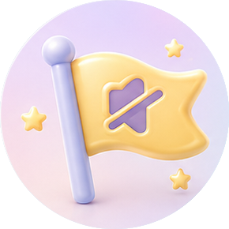
첫 노톡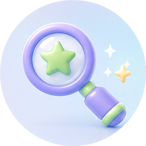
탐험가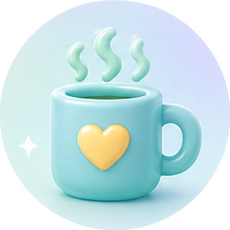
노토커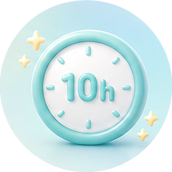
10시간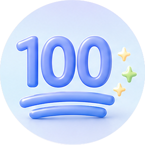
100시간
방장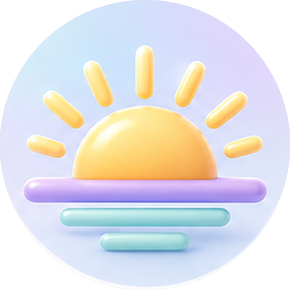
숨결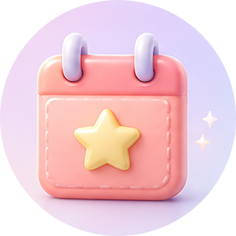
주말러Result
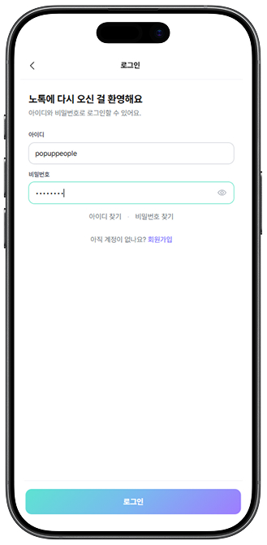
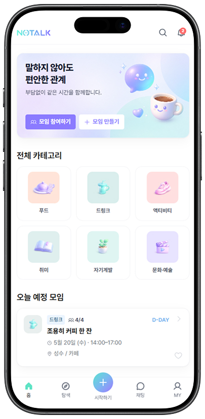
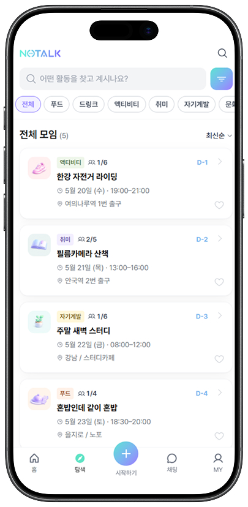
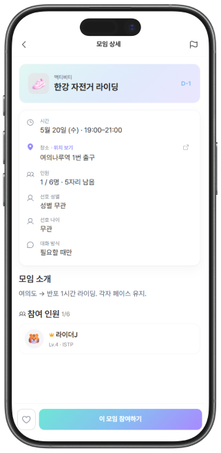
12종 캐릭터 선택으로 말 없이 나를 표현하는 첫 경험.
5개 카테고리 + 태그 필터로 원하는 모임을 빠르게 탐색.
활동 이력이 뱃지로 쌓이며 재방문 동기와 앱 애착을 동시에 설계.
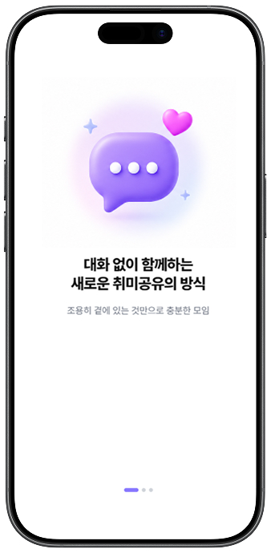
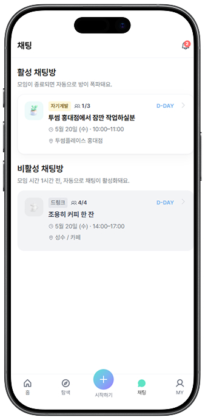
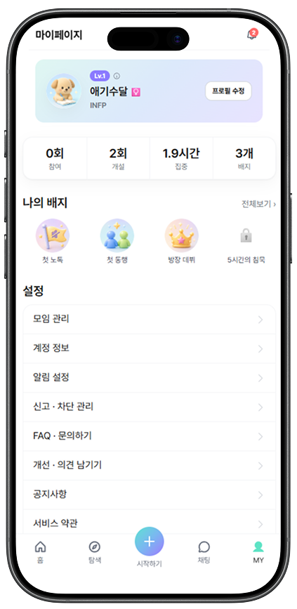
Review
팀 프로젝트로 진행하면서 의사결정·역할 분담·디자인-개발 커뮤니케이션을 실제로 경험할 수 있었습니다.
"캐릭터와 뱃지가 단순한 꾸미기가 아니라 앱의 언어가 될 수 있도록 시스템을 설계하는 과정이 가장 의미 있었습니다."
관심사로 연결되는 소모임이라는 콘셉트를 실제 사용자 흐름으로 구현하면서, 진입 허들을 낮추는 것이 얼마나 중요한지 직접 검증할 수 있었습니다. 텍스트 없이도 나를 표현할 수 있는 UI 언어를 찾아가는 과정이 이번 프로젝트의 핵심이었습니다.